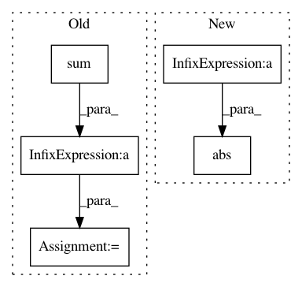

6dfa3d3e9a6a668ca6380134da7db7b63fad7f6a,tensorly/decomposition/_nn_cp.py,,non_negative_parafac_hals,#,294
Before Change
factors[mode] = tl.transpose(
hals_nnls_exact(tl.transpose(mttkrp), pseude_inverse, tl.transpose(factors[mode]),
maxiter=5000)[0])
factors_norm = tl.sum(tl.sum(pseude_inverse * tl.dot(tl.conj(tl.transpose(factors[mode])), factors[mode])))
rec_error = norm_tensor ** 2 + factors_norm - 2 * tl.dot(tl.tensor_to_vec(factors[mode]),
tl.tensor_to_vec(mttkrp))
rec_error = rec_error ** (1 / 2) / norm_tensor
if tol:
rec_errors.append(rec_error)
After Change
if tol:
factors_norm = cp_norm((weights, factors))
iprod = tl.sum(tl.sum(mttkrp*factor, axis=0)*weights)
rec_error = tl.sqrt(tl.abs(norm_tensor**2 + factors_norm**2 - 2*iprod)) / norm_tensor
rec_errors.append(rec_error)
if iteration > 1:
In pattern: SUPERPATTERN
Frequency: 3
Non-data size: 5
Instances
Project Name: tensorly/tensorly
Commit Name: 6dfa3d3e9a6a668ca6380134da7db7b63fad7f6a
Time: 2021-02-25
Author: caglayan.tuna@irisa.fr
File Name: tensorly/decomposition/_nn_cp.py
Class Name:
Method Name: non_negative_parafac_hals
Project Name: SheffieldML/GPy
Commit Name: 2dc1b14934a1d22855e81e77a0f2eee52a0d1f7f
Time: 2015-10-04
Author: alan.daniel.saul@gmail.com
File Name: GPy/inference/latent_function_inference/laplace.py
Class Name: Laplace
Method Name: rasm_mode
Project Name: tiberiu44/TTS-Cube
Commit Name: ab967e887ab37a3c15652f1e03aa7f490e3b1ebd
Time: 2018-11-05
Author: tibi@racai.ro
File Name: cube/models/vocoder.py
Class Name: BeeCoder
Method Name: learn